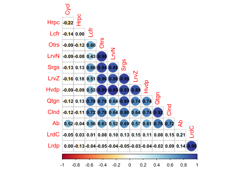
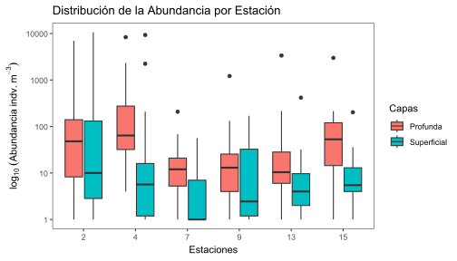
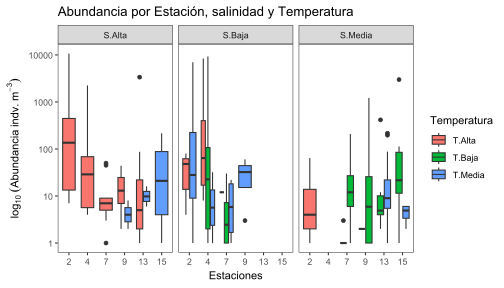
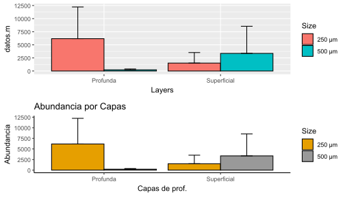
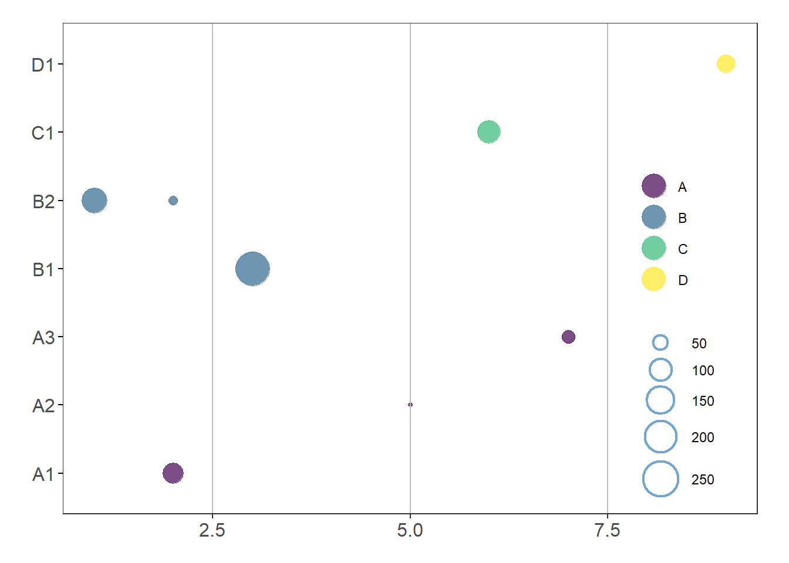

Manual de Análisis Visuazalización de datos ecológicos y ambientales - Anvidea
Capítulo 2. Visualización gráfica
….
Autor/a
Javier Rodríguez-Barrios, Kenedith Méndez y Javier de la Hoz
Fecha de publicación
July 24, 2025
Capítulo 2. Visualización gráfica de datos ecológicos y ambientales
Introducción
En el análisis ecológico, visualizar es entender. Así como un naturalista no puede interpretar un ecosistema sin observarlo directamente, un ecólogo de datos no puede comprender patrones sin trazar gráficas. Este capítulo invita a descubrir cómo los datos, cuando son representados gráficamente, revelan historias ocultas en los ríos, manglares y estuarios.
El ejercicio que desarrollamos a continuación usa una base de datos de plancton, recolectada en un gradiente ambiental. A través de figuras y representaciones visuales, lograremos identificar capas de variación, detectar anomalías, y explorar las huellas que dejan los procesos ecológicos en los datos. En estudios de plancton, por ejemplo, permite:
Detectar cambios en la estructura de la comunidad en función de salinidad o estratificación vertical.
Evaluar la distribución de grupos funcionales a lo largo de un gradiente ambiental.
Identificar estaciones con condiciones atípicas que podrían reflejar perturbaciones antrópicas.
Generar evidencia visual para orientar muestreos futuros o modelar procesos ecológicos.
En un contexto más amplio, estas representaciones también facilitan la comunicación con gestores ambientales, tomadores de decisiones y comunidades locales interesadas en la salud de sus ecosistemas.
Objetivos del capítulo
Comprender el rol de la visualización como herramienta exploratoria en ecología y medio ambiente.
Aplicar funciones del paquete ggplot2 para representar datos categóricos y cuantitativos.
Evaluar las visualizaciones generadas desde una perspectiva ecológica.
Prevenir errores comunes en la representación gráfica de datos ambientales.
Competencias específicas
Relacionar tipos de variables ecológicas con sus representaciones gráficas adecuadas.
Generar visualizaciones reproducibles que permitan comunicar resultados con claridad.
Interpretar patrones visuales en función de la ecología del plancton.
Contenido del capítulo
Se realizarán dos ejercicios (A: datos de plancton estudrino, B: datos macroinvertebrados de ríos), cuyos ejercicios tendrán la siguiente secuencia de ejercicios.
Cargar paquetes y lectura de bases de datos
2.1 Tipos de variables y visualización recomendada
2.2 Exploración de relaciones entre variables
2.3 Exploración de diferencias entre muestras
2.4 Figuras avanzadas (Figuras de burbujas)
2.5 Errores comunes e interpretación ecológica
2.6 Aplicaciones ecológicas y ambientales
Nota
Instrucciones: Primer ejercicio en donde se contextualiza a cada procedimiento realizado.
A. Manejo de datos biológicos y ambientales
Tomado de: Earth News
Resumen
El presente taller tiene por objeto, brindar pautas generales para el manejo y visualización de datos biológicos en el lenguaje tidyverse de R. Se realizan algunas operaciones generales usando una base de datos de plancton, que incorpora variables biológicas y ambientales. Se realizarán ejercicios con los comandos generales de tidyverse en el manejo y visualización de datos, utilizando como ejemplo la base de datos de plancton en un estuario de Colombia (biol).
La base de datos “Riqueza” tiene 498 registros y 8 columnas, incluyendo:
Variables categóricas o factores:
Station (Estación, numérica pero categórica en contexto)
Size (Tamaños de malla del plancton)
Layers (Capas o estratos en el gradiente de profundidad)
Groups (Grupos de plancton)
Variables cuantitativas:
Abundance (Abundancia de los grupos de plancton)
Temperature (Temperatura del agua)
Salinity (Salinidad del agua)
Density (Densidad de organismos)
Cargar paquetes y lectura de bases de datos
Para trabajar con tidyverse, primero debemos instalar y cargar los paquetes requeridos.
Código
# Librerías requeridaslibrary(tidyverse)library(dplyr)library(kableExtra) # Para la edición de tablaslibrary(readxl) # Cargar bases de Excelrequire(stats) # No se requiere instalarlibrary(lattice) # No se requiere instalarlibrary(ggrepel) # insertar rótulos a los puntosrequire(SciViews) # Fig. dispersión con coef. de pearsonlibrary(plotrix) # Figuras de cajas con múltiples variableslibrary(corrplot) # Figuras de elipseslibrary(psych) # Matrices de correlación para figuras de elipseslibrary(reshape) # Figuras de cajas con múltiples variableslibrary(reshape2) # Figuras de cajas con múltiples variables library(gridExtra) # Para figuras estadísticas (varios factores)library(grid) # Para figuras estadísticas (varios factores)library(ggplot2) # Paquete gráficolibrary(forcats) # Para manipulación de factoreslibrary(viridis) # Opciones de paletas de colores
Carga y exploración de datos
La siguiente base presenta una estructura vertical (formato largo), que puede ser apropiada para visualizar patrones generales de abundancia o de las variables ambientales por cada factor o variable categórica (Station, Size, Layers y Groups). Patrones multivariados en los que se requiera visualizar la relación entre cada taxón las variables ambientales, exigen un ajuste de la base de datos a un formato ancho (biol1), en donde cada taxón representa una columna diferente.
Código
# Cargar datos desde Excelbiol <-read_xlsx("plancton.xlsx", sheet ="Riqueza")# Explorar estructura# glimpse(biol)# summary(biol)# tabla con los datoshead(biol) %>%kbl() %>%kable_classic(full_width = F)
Station
Size
Layers
Groups
Abundance
Temperature
Salinity
Density
2
250 μm
Surface
Quetognatos
0
30.29749
34.69981
21.417828
2
250 μm
Surface
Sergestidae
0
29.40959
25.83323
15.085254
2
250 μm
Surface
Luciferidae
0
29.59008
12.38513
5.729643
2
250 μm
Surface
Calanoida
32
30.29749
34.69981
21.417828
2
250 μm
Surface
Cyclopoida
4
29.40959
25.83323
15.085254
2
250 μm
Surface
Harpacticoida
2
29.59008
12.38513
5.729643
Base de datos en formato ancho
El siguiente procedimiento permitirá organizar la base de datos de tal forma que pueda ser utilizada en diseños multivariados. Normalmente encontrarémos las bases de datos en formato ancho, para esos casos, no será necesario realizar el siguiente procedimiento.
Código
# Procesamiento para ajustar los datos en formato anchobiol1 <- biol %>%# Abreviaturas de los taxonesmutate(Abrev =abbreviate(Groups, minlength =4)) %>%# Variables a factoresmutate(across(c(Station, Size, Layers), as.factor)) %>%# Agrupamiento para el formato anchogroup_by(Station, Size, Layers) %>%# Promedios de las variables ambientalessummarize(across(c(Temperature, Salinity, Density), ~round(mean(.),2)),# Totales de las abundancias por cada factorAbundance =list(setNames(tapply(Abundance, Abrev,sum,default =0), unique(Abrev))),# Corregir algunos errores del agrupamiento.groups ="drop") %>%# Separar las abundancias en las columnas de cada taxonunnest_wider(Abundance) %>%# Crear columna Ref, tomando iniciales de tres factoresmutate(Ref =paste0(substr(Station, 1, 2),substr(Size, 1, 1),substr(Layers, 1, 1))) %>%# Pasar la columna de referencia (consec) a la 1a columnaselect(Ref, everything()) %>%# Crear la columna Ab con la suma de las columnas de taxonesmutate(# Suma de las columnas especificadas (Ab) Ab =rowSums(across(Qtgn:Otrs), na.rm =TRUE) ) %>%# Mover la columna de abundancias (AB)select(Ref,Station,Size,Layers,Temperature, Salinity,Density,Ab, everything()) # tabla con los datoshead(biol1) %>%kbl() %>%kable_classic(full_width = F)
Ref
Station
Size
Layers
Temperature
Salinity
Density
Ab
Qtgn
Srgs
Lcfr
Clnd
Cycl
Hrpc
Lrdp
Hvdp
LrvN
LrdC
LrvZ
Otrs
22D
2
250 μm
Depth
29.88
25.26
14.40
14030
12672
408
48
135
400
16
68
56
28
3
84
112
22S
2
250 μm
Surface
29.75
23.27
13.35
5210
568
20
2
28
984
0
2488
0
0
1096
24
0
25D
2
500 μm
Depth
29.40
19.97
10.53
434
50
0
0
0
355
0
0
1
16
0
3
9
25S
2
500 μm
Surface
29.99
28.66
17.02
10697
10
0
0
5
10672
0
6
0
0
0
2
2
42D
4
250 μm
Depth
29.38
17.34
8.76
13488
10680
928
32
120
64
0
48
280
400
200
368
368
42S
4
250 μm
Surface
29.52
21.89
12.11
2529
246
17
1
0
2240
0
16
2
2
4
1
0
2.1 Tipos de variables y visualización recomendada
En ecología, las variables pueden ser categóricas (como el tipo de hábitat o la estación de muestreo) o cuantitativas (como la salinidad, temperatura o abundancia). A continuación, se ofrecen ejemplos de visualización recomendada según el tipo de variable:
Categórica única → gráfico de barras (geom_bar())
Cuantitativa única → histograma (geom_histogram()), densidad (geom_density())
Dos cuantitativas → gráfico de dispersión (geom_point())
Cuantitativa vs. categórica → boxplot (geom_boxplot()), violin plot (geom_violin())
Relaciones múltiples → gráfico de pares (GGally::ggpairs())
Elegir la visualización adecuada no solo mejora la estética, sino también la interpretación ecológica.
2.2 Exploración de relaciones entre variables
Objetivo Relaciones entre variables biológicas y de estas con las ambientales (ej. figuras de elipses, pares, dispersión y coplot).
2.2.1 Figuras de elipses y correlogramas
Las figuras de correlación realizadas con el paquete corrplot, son una buena opción para evaluar los patrones generales de relaciones positivas (azul) y/o negativas (rojo), entre parejas de variables. Funcionan para objetivos orientados en la relaciones de (1) variables biológicas, (2) variables ambientales y (3) variables biológicas con las ambientales.
Código
# Selección de variables biológicas y ambientales# str(biol1)# Variables ambientales columnas 6 a 7, biológicas columnas 8 a 20# Elipses con coloresM <-cor(biol1[,8:20]) # Matriz de Correlación (M)
La Figura 1 muestra la relación entre las variables, a partir de figuras de elipses y de circulos.
Código
# Elipses con colorescorrplot(M, method ="ellipse") # Figura de correlaciones con elipses
Figura 1: Relación de variables ambientales y los taxones en las veinte quebradas estudiadas.
La Figura 2 muestra la relación entre las variables, a partir de figuras de elipses, además incorpora al nivel de correlación entre las parejas de variables con los coeficientes de Pearson.
Código
# Elipses con colorescorrplot.mixed(M, upper="ellipse")
Figura 2: Relación de variables ambientales y los taxones en las veinte quebradas estudiadas.
La siguiente opción de correlación (Figura 3), presenta un código más compejo que las anteriores, pero permite generar una visualización más completa de las relaciones entre parejas de variables y sus coeficientes de correlación de Pearson (también se pueden probar otros coeficientes como Spearman o Kendall).
Código
corrplot(M, method ="circle", # Correlaciones con circulostype ="lower", insig="blank", # Forma del panelorder ="AOE", diag =FALSE, # Ordenar por nivel de correlaciónaddCoef.col ="black", # Color de los coeficientesnumber.cex =0.8, # Tamaño del textocol =COL2("RdYlBu", 200)) # Transparencia de los circulos

Figura 3: Relación de variables ambientales y los taxones en las veinte quebradas estudiadas.
La siguiente figura de correlaciones (Figura 4) es apropiada para casos en los que tenemos muchas variables biológicas (ej. tipos de taxones) e interesa evaluar su relación con las variables ambientales.
Código
# Elipses con coloresM1 <-cor(biol1[,5:7], biol1[,8:20]) # Matriz de Correlación (M)# Elipses con colorescorrplot(M1, method ="ellipse", type="upper")
Figura 4: Relación de variables ambientales y los taxones en las veinte quebradas estudiadas.
2.2.2 Figuras de Dispersión por pares de variables (pairs)
A continuación se presenta una variante a las figuras de pares (Figura 5), que por medio de la función panel, permite incorporar otros elementos en la matriz gráfica, como histogramas para visualizar el patrón de simetría de cada variable y el valor de correlación con coeficientes como el de Pearson. Las líneas rojas definen la relación no lineal o suavizada (loess o lowess) entre las parejas de variables.
Figura 5: Relación de variables ambientales y algunos taxones en las veinte quebradas estudiadas, con regresiones suavizadas, coeficientes de correlación de Pearson e histogramas de frecuencia para cada variable.
2.2.1 Histogramas
Las dos figuras que siguen (Figura 6 y Figura 7), utilizan comandos del paquete ggplot2 para visualizar de una forma más compacta a la distribución de frecuencias de la variable abundancia de insectos (AB) en las cuatro cuencas evaluadas.
Código
# Frecuencias de abundancias por densidadggplot(data = biol1, aes(x = Ab, color = Layers)) +geom_density(aes(fill = Layers), alpha =0.5) +labs( y="Frecuencia", x="Abundancia") +theme_bw() +theme(panel.grid =element_blank() )
Figura 6: Patrón de distribución contínuo de la abundancia de insectos en las veinte quebradas evaluadas.
Código
# Otra opciónggplot(data = biol1, aes(x = Ab, color = Layers)) +geom_density(aes(fill = Layers)) +facet_wrap(~ Size) +theme_bw() +theme(panel.grid =element_blank() )
Figura 7: Patrón de distribución contínuo de la abundancia de insectos en las veinte quebradas y cuatro cuencas evaluadas.
2.2.4 Dispersión X-Y
Dispersión X-Y con ggplot2
Las tres figuras que siguen, muestran opciones más compactas que la grafica anterior, para visualizar relaciones bivariadas en los descriptores en estudio, permitiendo también analizar el patrón de dispersión de los datos para cada cuenca evaluada (colores). La Figura 8 permite visualizar la relación lineal incluyendo bandas grises que representan los límites de confianza de la proyección realizada.
Figura 8: Relación Lineal entre el pH y la abundancia de Efemerópteros en las veinte quebradas y las cuatro cuencas evaluadas.
La Figura 9, a diferencia de la anterior, permite visualizar una relación suavizada en la pareja de variables en comparación. Esta relación no lineal es conocida como Loess o Lowess.
Figura 10: Relación Suavizada (Loess) entre el pH y la abundancia de Efemerópteros en las veinte quebradas y las cuatro cuencas evaluadas.
2.3 Exploración de diferencias entre variables
Objetivo Visualizar diferencias o variaciones entre muestras de variables agrupadoras (ej. figuras de cajas,coplot, columnas, estadísticas).
2.3.1 Cajas y Bigotes
Cajas con un factor: Estaciones.
A continuación se visualiza el patrón de variación en la abundancia de los insectos (Figura 11), para las cuatro cuencas evaluadas, adicionando colores especificos, tomados de los enlaces anteriores.
Código
# Convertir variables a factores en caso que se requierabiol1 <- biol1 %>%mutate(across(c(Station, Size, Layers), as.factor))# Gráfico de caja de la abundancia por estaciónggplot(biol, aes(x =factor(Station), y = Abundance)) +geom_boxplot(aes(fill =factor(Station))) +scale_y_continuous(trans ="log10") +# Aplicar la transformación logarítmicascale_fill_manual(values =c('#fc8d59','#ffffbf','#99d594','#377eb8','#e78ac3','#7570b3')) +labs(title ="Distribución de la Abundancia por Estación", x ="Estaciones", fill ="Estaciones", y =expression(log[10]~(Abundancia~indv.~m^-3)) ) +theme_bw() +theme(panel.gridr =element_blank() )# geom_boxplot(notch = T,... para las muescas.
Figura 11: Variación en la abundancia de insectos para las cuatro cuencas evaluadas.
Cajas con dos factores: Estaciones y capas.
Las dos figuras a continuación comparan el patrón de abundancia para la base de datos original que está en formato largo (biol) y en formato ancho (biol1). Analizar a que se deben las diferencias.
Código
library(forcats) # Para manipulación de factores# Cambiar etiquetas de Layers con recode_factor()biol <- biol %>%mutate(Layers =recode_factor(Layers, "Depth"="Profunda", "Surface"="Superficial"))# Gráfico de caja de la abundancia por estaciónggplot(biol, aes(x =factor(Station), y = Abundance)) +geom_boxplot(aes(fill = Layers)) +scale_y_continuous(trans ="log10") +# Aplicar la transformación logarítmicalabs(title ="Distribución de la Abundancia por Estación", x ="Estaciones", fill ="Capas",y =expression(log[10]~(Abundancia~indv.~m^-3)) ) +theme_bw()+theme(panel.grid =element_blank() )

Código
library(forcats) # Para manipulación de factores# Cambiar etiquetas de Layers con recode_factor()biol1 <- biol1 %>%mutate(Layers =recode_factor(Layers, "Depth"="Profunda", "Surface"="Superficial"))# Gráfico de caja de la abundancia por estaciónggplot(biol1, aes(x =factor(Station), y = Ab)) +geom_boxplot(aes(fill = Layers)) +scale_y_continuous(trans ="log10") +# Aplicar la transformación logarítmicalabs(title ="Distribución de la Abundancia por Estación", x ="Estaciones", fill ="Capas",y =expression(log[10]~(Abundancia~indv.~m^-3)) ) +theme_bw()+theme(panel.grid =element_blank() )
Código
# facet_wrap(~ Layers, scales = "free") # Paneles por variable
Cajas con diferentes variables: Ambientales
La Figura 12 muestra su versatilidad en que permite incorporar diferentes variables por cada panel presentado. Las cajas de colores representan a los grupos en comparación (cuencas).
Código
# Figuras multivariadas de Cajas y bigotesggplot(melt(biol1[,c(2,5:7)]), aes(x=Station, y=value)) +# Usar Station en el eje Xgeom_boxplot(aes(fill=Station)) +scale_y_continuous(trans ="log10") +# Aplicar la transformación logarítmicascale_color_viridis(discrete =TRUE) +labs(title ="Distribución de la Abundancia por Estación", x ="Estaciones", fill ="Estaciones",y =expression(log[10]~(Abundancia~indv.~m^-3)) ) +facet_wrap(~ variable, scales ="free") +# Paneles por variabletheme_bw() +theme(panel.grid =element_blank() )
Figura 12: Variación en la abundancia de diferentes taxones de insectos para las cuatro cuencas evaluadas.
Categorización de dos variables ambientales (Temperatura y Salinidad)
Este método divide la variable en tres partes iguales (terciles) utilizando los cuantiles de la distribución. En el siguiente ejercicio se crean dos variables categóricas llamadas claseTemp y claseSal.
Código
# Categorización de la temperaturabiol <- biol %>%mutate(claseTemp =case_when( Temperature <=quantile(Temperature, 1/3, na.rm =TRUE) ~"T.Baja", Temperature <=quantile(Temperature, 2/3, na.rm =TRUE) ~"T.Media", Temperature <=quantile(Temperature, 3/3, na.rm =TRUE) ~"T.Alta" ))# Categorización de la salinidad biol <- biol %>%mutate(claseSal =case_when( Salinity <=quantile(Salinity, 1/3, na.rm =TRUE) ~"S.Baja", Salinity <=quantile(Salinity, 2/3, na.rm =TRUE) ~"S.Media", Salinity <=quantile(Salinity, 3/3, na.rm =TRUE) ~"S.Alta" ))# Se puede resumir el nivel alto por el comando "TRUE ~ "Alta"".
Cajas con tres factores (estaciones y clases de temperatura y de salinidad)
Código
# Crear gráfico con etiquetas de valores atípicos redondeadosggplot(biol, aes(x =factor(Station), y = Abundance)) +geom_boxplot(aes(fill = claseTemp)) +labs(title ="Abundancia por Estación, salinidad y Temperatura", x ="Estaciones", fill ="Temperatura", y =expression(log[10]~(Abundancia~indv.~m^-3)) ) +scale_y_continuous(trans ="log10") +# Aplicar la transformación logarítmicascale_color_viridis(discrete =TRUE) +facet_wrap(~ claseSal, nrow =1, strip.position ="top") +theme_bw() +theme(panel.grid =element_blank() )

2.3.2 Figuras con estadísticos (promedios, errores, …)
Base de datos con múltiples factores
Lo que diferencia a esta base de datos (insectos1.csv) de la anterior (insectos.csv), es que presenta a diferentes variables agrupadoras o factores, como periodos de lluvia, Gruos Funcionales Alimenticios (GF) y Muestreos. Para el siguiente ejercicio se realizará el resumen estadístico de los dos primeros factores.
Código
# Resumen estadístico "datos_resum"datos_resum <- biol1 %>%# Base de datos resumidagroup_by(Size,Layers) %>%# Factor o variable agrupadorasummarise(datos.m =mean(Ab), # Media de cada grupo del factordatos.de =sd(Ab), # Desviacioes estándar de cada grupodatos.var =var(Ab), # Varianzas de cada grupon.Biom =n(), # Tamaño de cada grupodatos.ee =sd(Ab)/sqrt(n())) # Error estándar de cada grupo# tabla con los datoshead(datos_resum) %>%kbl() %>%kable_classic(full_width = F)
Size
Layers
datos.m
datos.de
datos.var
n.Biom
datos.ee
250 μm
Profunda
6175.3333
6054.9589
36662527.47
6
2471.92663
250 μm
Superficial
1515.0000
2015.5865
4062588.80
6
822.85973
500 μm
Profunda
228.8333
159.4232
25415.77
6
65.08426
500 μm
Superficial
3363.6667
5180.9455
26842196.67
6
2115.11216
Las asignaciones f1 y f2, corresponden a las mismas figuras bifactoriales, en donde la primera se muestra con pocos ajustes de sus ejes y fondo, comparada a la segunda que presenta una mayor edición. Finalmente el comando grid.arrange permite graficar a las dos figuras en un mismo panel.
Código
# Figura 1 (f1)f1 =ggplot(datos_resum, aes(x=Layers, y=datos.m, fill=Size)) +geom_bar(stat="identity", color="black", position=position_dodge()) +geom_errorbar(aes(ymin=datos.m, ymax=datos.m+datos.de), width=.2,position=position_dodge(.9)) # f2: Otro formato de figura bifactorial - theme_classicf2 = f1+labs(title="Abundancia por Capas", x="Capas de prof.", y ="Abundancia")+theme_classic() +scale_fill_manual(values=c('#E69F00','#999999'))# Impresión de un panel con las dos figuras de forma horizontal (f1 y f2)grid.arrange (f1, f2, ncol=2)
Figura 13: Differencias en la abundancia de insectos, los periodos de lluvia y para los grupos funcionales (GF).
Cambiando la ubicación por columnas ncol por la de filas nrow, se cambia la posición de las figuras anteriores en el mismo panel.
Código
# Impresión de un panel con las dos figuras de forma vertical (p1 y p2)grid.arrange (f1, f2, nrow=2)

Figura 14: Differencias en la abundancia de insectos, los periodos de lluvia y para los grupos funcionales (GF).
Cuestionario
Nota
Instrucciones: Responde cada pregunta usando el código y los resultados obtenidos en los ejercicios anteriores.
1. ¿Cómo se distribuye la abundancia total de organismos en las estaciones de muestreo?
2. ¿Cómo varía la abundancia entre diferentes tamaños de malla?
3. ¿Cómo se distribuye la abundancia en las capas de muestreo?
4. ¿Cómo se correlacionan las variables ambientales y biológicas?
5. ¿Existe una relación entre temperatura y abundancia total?
6. ¿Cómo varía la salinidad entre las estaciones de muestreo?
7. ¿Cuál es la relación entre la densidad y la temperatura, para las diferentes capas?
8. ¿Cuál es la relación entre la salinidad y la temperatura, para los diferentes ojos de malla?
9. ¿Cómo varía la abundancia de organismos entre capas?
10. ¿Cómo se distribuye la densidad en las capas?
11. ¿Cómo se agrupan las estaciones según temperatura y salinidad?
12. ¿Cómo se relaciona la abundancia de organismos en relación con la densidad, para las diferentes capas?
13. ¿Cómo varían las estaciones en función de la salinidad y la temperatura?
2.4 Figuras avanzadas (Figuras de burbujas)
Ejercicio con datos hipotéticos
El presente ejercicio tiene por objetivo, realizar la siguiente figura de burbujas, orientada a evaluar el patrón de relación entre la abundancia y la composición de peces andinos, con la altura sobre el nivel del mar, de acuerdo a lo registrado en este documento: Miranda et al. (2022). En esa publicación se puede descar la base de datos utilizada Enlace_base de datos.xlsx. Para esta figura, se requiere contar con dos variables categóricas (taxones y cuencas) y una variable contínua (altura s.n.m.).
ggplot(datos, aes(x = x, y = y, size = size, color = group)) +geom_point() +scale_size(name ="Tamaño", range =c(1, 10)) +theme_bw()
Código
# Gráfico mejoradoggplot(datos, aes(x = x, y = group1, size = size, color = group)) +geom_point() +scale_size(name ="Tamaño", range =c(1, 10)) +theme_bw() +theme(panel.grid =element_blank(), # Eliminar la cuadrícula del fondoaxis.ticks.y =element_blank(), # Eliminar las marcas del eje yaxis.text.x =element_text(size =12), # Ajustar el tamaño del texto en el eje x ) +geom_vline(xintercept =c(2.5, 5, 7.5), color ="gray") +# Líneas verticales en los valores 2.5, 5 y 7.5guides(color =guide_legend(title =NULL,override.aes =list(size =3)), # Eliminar el título de la leyenda para "group"size =guide_legend(title =NULL, override.aes =list(fill =NA, color ="black")) # Modificar la leyenda del tamaño de los círculos )
Código
# Gráfico mejoradoggplot(datos, aes(x = x, y = group1, size = size, color = group)) +geom_point() +scale_size(name ="Tamaño", range =c(1, 10)) +theme_bw() +theme(panel.grid =element_blank(), # Eliminar la cuadrícula del fondoaxis.ticks.y =element_blank(), # Eliminar las marcas del eje yaxis.text.x =element_text(size =12),# Ajustar el tamaño del texto en el eje x ) +geom_vline(xintercept =c(2.5, 5, 7.5), color ="gray") +# Líneas verticales en los valores 2.5, 5 y 7.5guides(color =guide_legend(title =NULL,override.aes =list(size =3)), # Eliminar el título de la leyenda para "group"size =guide_legend(title =NULL, override.aes =list(shape =1, color ="black")) # Modificar la leyenda del tamaño de los círculos )
Código
# Gráfico mejoradoggplot(datos, aes(x = x, y = group1, size = size, color = group)) +geom_point() +scale_size(name ="Tamaño", range =c(1, 10)) +theme_bw() +theme(panel.grid =element_blank(), # Eliminar la cuadrícula del fondoaxis.ticks.y =element_blank(), # Eliminar las marcas del eje yaxis.text.x =element_text(size =12), # Ajustar el tamaño del texto en el eje xaxis.title.x =element_blank(), # Quitar el título del eje xaxis.title.y =element_blank(), # Quitar el título del eje ylegend.position ="right", # Colocar las leyendas a la derechalegend.direction ="vertical"# Asegurarse que las leyendas estén en orientación vertical ) +geom_vline(xintercept =c(2.5, 5, 7.5), color ="gray") +# Líneas verticales en los valores 2.5, 5 y 7.5guides(color =guide_legend(title =NULL,override.aes =list(size =5)), # Eliminar el título de la leyenda para "group"size =guide_legend(title =NULL, override.aes =list(shape =1, color ="black", stroke =1.2)) # Aumentar el grosor del contorno de los círculos en la leyenda )
Código
# Gráfico mejoradoggplot(datos, aes(x = x, y = group1, size = size, color = group)) +geom_point(alpha=0.7) +# Transparecia de los coloresscale_size(name ="Tamaño", range =c(1, 10)) +scale_color_viridis(discrete=TRUE, guide=FALSE) +# Escala de colorestheme_bw() +theme(panel.grid =element_blank(), # Eliminar la cuadrícula del fondoaxis.ticks.y =element_line(color ="black"), # Añadir marcas de graduación en el eje yaxis.text.x =element_text(size =12), # Ajustar el tamaño del texto en el eje xaxis.text.y =element_text(size =12), # Ajustar el tamaño del texto en el eje yaxis.title.x =element_blank(), # Quitar el título del eje xaxis.title.y =element_blank(), # Quitar el título del eje ylegend.position =c(0.95, 0.01), # Colocar las leyendas en la parte inferior derechalegend.justification =c(1, 0), # Ajustar la justificación de las leyendaslegend.direction ="vertical", # Colocar las leyendas en orientación verticalplot.margin =margin(15, 20, 15, 20), # Aumentar márgenes para evitar solapamiento ) +geom_vline(xintercept =c(2.5, 5, 7.5), color ="gray") +# Líneas verticales en los valores 2.5, 5 y 7.5guides(size =guide_legend(title =NULL, override.aes =list(shape =1, color ="#377eb8", stroke =1.2)), # Aumentar el grosor del contorno de los círculos en la leyendacolor =guide_legend(title =NULL,override.aes =list(size =7)) # Eliminar el título de la leyenda para "group" )

2.4.2 Ejercicio con datos de Plancton Estuarino
Carga y exploración de datos
A continuación se realiza el ejercicio con los datos del plancton estuarino que se ha trabajado en temáticas anteriores.
Código
library(readxl)library(kableExtra)# Cargar datos desde Excelbiol <-read_xlsx("plancton.xlsx", sheet ="Riqueza")# Explorar estructura# glimpse(biol)# summary(biol)# tabla con los datoshead(biol) %>%kbl() %>%kable_classic(full_width = F)
Station
Size
Layers
Groups
Abundance
Temperature
Salinity
Density
2
250 μm
Surface
Quetognatos
0
30.29749
34.69981
21.417828
2
250 μm
Surface
Sergestidae
0
29.40959
25.83323
15.085254
2
250 μm
Surface
Luciferidae
0
29.59008
12.38513
5.729643
2
250 μm
Surface
Calanoida
32
30.29749
34.69981
21.417828
2
250 μm
Surface
Cyclopoida
4
29.40959
25.83323
15.085254
2
250 μm
Surface
Harpacticoida
2
29.59008
12.38513
5.729643
2.4.2.1 Burbujas con leyenda afuera (Salinidad)
Código
# Organización de la base de datosbiol <- biol %>%# Convertir variables a factoresmutate(across(c(Station, Size, Layers, Groups), as.factor)) %>%# Abreviar nombres de los grupos taxonómicosmutate(Abrev =abbreviate(Groups, minlength =4)) %>%# Reorganizar las columnasselect(Station, Size, Layers, Temperature, Salinity, Density, Groups, Abrev, Abundance)# Calcular la Abundancia total por grupo y ordenar taxonesorden_abundancia <- biol %>%group_by(Groups) %>%summarise(Total_Abundance =sum(Abundance, na.rm =TRUE)) %>%arrange(desc(Total_Abundance)) %>%pull(Groups)# Aplicar el orden a la variable categórica (invirtiendo el orden para que los más abundantes estén arriba)biol <- biol %>%mutate(Groups =factor(Groups, levels =rev(orden_abundancia)),Abrev =factor(Abrev, levels =rev(abbreviate(orden_abundancia, minlength =4))))# Crear el gráfico de burbujasggplot(biol, aes(x = Salinity, y = Abrev, size = Abundance, color = Station)) +geom_point(alpha =0.7) +# Transparencia para mejor visualizaciónscale_size(name ="Abundancia", range =c(1, 8)) +scale_x_continuous(limits =c(10, 35), breaks =seq(10, 35, by =5)) +theme_bw() +theme(panel.grid =element_blank(),axis.ticks.y =element_blank(),axis.text.x =element_text(size =12),axis.title.x =element_blank(),axis.title.y =element_blank(),legend.position ="right",legend.direction ="vertical" ) +# Líneas verticales grisesgeom_vline(xintercept =seq(10, 35, by =5), color ="gray") +# Circulos de la abundancia en la leyendaguides(size =guide_legend(title =NULL, override.aes =list(shape =1, color ="#377eb8", stroke =1.2)), # Circulos de las Layers en la leyendacolor =guide_legend(title =NULL, # Eliminar el título de la leyenda para "group"override.aes =list(size =7)) )
2.4.2.2 Burbujas con leyenda adentro (Salinidad)
Código
# Crear el gráfico de burbujasggplot(biol, aes(x = Salinity, y = Abrev, size = Abundance, color = Station)) +geom_point(alpha =0.7) +# Transparencia para mejor visualizaciónscale_size(name ="Abundancia", range =c(1, 8)) +scale_x_continuous(limits =c(10, 35), breaks =seq(10, 35, by =5)) +scale_color_viridis(discrete=TRUE, guide=FALSE) +# Escala de colorestheme_bw() +theme(panel.grid =element_blank(), # Eliminar la cuadrícula del fondoaxis.ticks.y =element_line(color ="black"), # Añadir marcas de graduación en el eje yaxis.text.x =element_text(size =8), # Ajustar el tamaño del texto en el eje xaxis.text.y =element_text(size =8), # Ajustar el tamaño del texto en el eje yaxis.title.x =element_blank(), # Quitar el título del eje xaxis.title.y =element_blank(), # Quitar el título del eje ylegend.position =c(0.2, 0.01), # Colocar las leyendas en la parte inferior derechalegend.justification =c(1, 0), # Ajustar la justificación de las leyendaslegend.direction ="vertical", # Colocar las leyendas en orientación verticalplot.margin =margin(15, 20, 15, 20), # Aumentar márgenes para evitar solapamiento ) +# Líneas verticales grisesgeom_vline(xintercept =seq(10, 35, by =5), color ="gray") +# Circulos de la abundancia en la leyendaguides(size =guide_legend(title =NULL, override.aes =list(shape =1, color ="#377eb8", stroke =1.2)), # Circulos de las Layers en la leyendacolor =guide_legend(title =NULL, # Eliminar el título de la leyenda para "group"override.aes =list(size =7)) )
2.4.2.3 Burbujas con leyenda adentro (Temperatura)
Código
# Organización de la base de datosbiol <- biol %>%# Convertir variables a factoresmutate(across(c(Station, Size, Layers, Groups), as.factor)) %>%# Abreviar nombres de los grupos taxonómicosmutate(Abrev =abbreviate(Groups, minlength =4)) %>%# Reorganizar las columnasselect(Station, Size, Layers, Temperature, Salinity, Density, Groups, Abrev, Abundance)# Calcular la Abundancia total por grupo y ordenar taxonesorden_abundancia <- biol %>%group_by(Groups) %>%summarise(Total_Abundance =sum(Abundance, na.rm =TRUE)) %>%arrange(desc(Total_Abundance)) %>%pull(Groups)# Aplicar el orden a la variable categórica (invirtiendo el orden para que los más abundantes estén arriba)biol <- biol %>%mutate(Groups =factor(Groups, levels =rev(orden_abundancia)),Abrev =factor(Abrev, levels =rev(abbreviate(orden_abundancia, minlength =4))))# Crear el gráfico de burbujas con Temperature en el eje Xggplot(biol, aes(x = Temperature, y = Abrev, size = Abundance, color = Station)) +geom_point(alpha =0.7) +# Transparencia para mejor visualizaciónscale_size(name ="Abundancia", range =c(1, 8)) +scale_x_continuous(limits =c(29, 30), breaks =seq(29, 30, by =0.2)) +# Límites y gradación del eje xscale_color_viridis(discrete=TRUE, guide=FALSE) +# Escala de colorestheme_bw() +theme(panel.grid =element_blank(), # Eliminar la cuadrícula del fondoaxis.ticks.y =element_line(color ="black"), # Añadir marcas de graduación en el eje yaxis.text.x =element_text(size =8), # Ajustar el tamaño del texto en el eje xaxis.text.y =element_text(size =8), # Ajustar el tamaño del texto en el eje yaxis.title.x =element_blank(), # Quitar el título del eje xaxis.title.y =element_blank(), # Quitar el título del eje ylegend.position =c(0.77, 0.01), # Colocar las leyendas en la parte inferior derechalegend.justification =c(1, 0), # Ajustar la justificación de las leyendaslegend.direction ="vertical"# Colocar las leyendas en orientación vertical ) +# Líneas verticales grisesgeom_vline(xintercept =seq(floor(min(biol$Temperature, na.rm =TRUE)), ceiling(max(biol$Temperature, na.rm =TRUE)), by =0.2), color ="gray") +# Intervalos para las líneas verticales# Círculos de la abundancia en la leyendaguides(size =guide_legend(title =NULL, override.aes =list(shape =1, color ="#377eb8", stroke =1.2)), # Círculos de las Layers en la leyendacolor =guide_legend(title =NULL, # Eliminar el título de la leyenda para "group"override.aes =list(size =6)) )
2.4.2.4 gráfico de burbujas animado (Temperatura)
Código
library(plotly) # Crear el gráfico de burbujas con Temperature en el eje Xfig <-ggplot(biol, aes(x = Temperature, y = Abrev, size = Abundance, color = Station)) +geom_point(alpha =0.7) +# Transparencia para mejor visualizaciónscale_size(name ="Abundancia", range =c(1, 8)) +scale_x_continuous(limits =c(29, 30), breaks =seq(29, 30, by =0.2)) +# Límites y gradación del eje xscale_color_viridis(discrete=TRUE, guide=FALSE) +# Escala de colorestheme_bw() +theme(panel.grid =element_blank(), # Eliminar la cuadrícula del fondoaxis.ticks.y =element_line(color ="black"), # Añadir marcas de graduación en el eje yaxis.text.x =element_text(size =8), # Ajustar el tamaño del texto en el eje xaxis.text.y =element_text(size =8), # Ajustar el tamaño del texto en el eje yaxis.title.x =element_blank(), # Quitar el título del eje xaxis.title.y =element_blank(), # Quitar el título del eje ylegend.position =c(0.77, 0.01), # Colocar las leyendas en la parte inferior derechalegend.justification =c(1, 0), # Ajustar la justificación de las leyendaslegend.direction ="vertical"# Colocar las leyendas en orientación vertical ) +# Líneas verticales grisesgeom_vline(xintercept =seq(floor(min(biol$Temperature, na.rm =TRUE)), ceiling(max(biol$Temperature, na.rm =TRUE)), by =0.2), color ="gray") +# Intervalos para las líneas verticales# Círculos de la abundancia en la leyendaguides(size =guide_legend(title =NULL, override.aes =list(shape =1, color ="#377eb8", stroke =1.2)), # Círculos de las Layers en la leyendacolor =guide_legend(title =NULL, # Eliminar el título de la leyenda para "group"override.aes =list(size =6)) )ggplotly(fig)
Cuestionario
Instrucciones
Responda cada una de las siguientes preguntas resolviendo los ejercicios en R utilizando Tidyverse. Cada pregunta incluye una solución esperada y un análisis del resultado.
1. Cargar una base de datos
Cargue la base de datos desde un archivo de Excel y visualice las primeras filas.
Resultado esperado: Se debe observar una estructura clara con variables correctamente identificadas.
2. Convertir variables a factores
Transforme las variables “Station”, “Size”, “Layers” y “Groups” en factores.
3. Abreviar nombres de grupos
Cree una nueva variable “Abrev” con abreviaciones de los nombres de los grupos taxonómicos.
Resultado esperado: Cada grupo debe tener una abreviatura de al menos 4 caracteres.
4. Selección de columnas
Reordene la base de datos para mantener solo variables clave.
Resultado esperado: La base de datos debe contener solo las columnas seleccionadas.
5. Ordenar taxones por abundancia
Calcule la abundancia total por grupo y ordénelos.
Resultado esperado: Los taxones deben estar ordenados de mayor a menor abundancia.
6. Reorganizar el factor “Groups”
Reordene “Groups” para que los taxones más abundantes aparezcan arriba.
Resultado esperado: Si se visualiza la base de datos, los taxones más abundantes estarán al inicio.
7. Crear un gráfico de burbujas
Genere un gráfico de burbujas con “Salinity” en el eje X y “Abrev” en el eje Y.
Resultado esperado: Un gráfico de burbujas con los grupos taxonómicos correctamente representados.
8. Mejorar la escala del gráfico
Defina límites e intervalos adecuados para el eje X.
Resultado esperado: Se deben ver intervalos claros en el eje X con valores de 5 en 5.
9. Personalizar la leyenda
Ajuste la leyenda del gráfico para mejorar su interpretación.
Resultado esperado: Las leyendas deben tener títulos claros.
10. Agregar líneas de referencia
Incluya líneas verticales en los valores 10, 15, 20, 25, 30 y 35.
11. Ajustar la transparencia de las burbujas
Modifique el gráfico de burbujas para que las burbujas sean más transparentes (alpha = 0.5).
Resultado esperado: Las burbujas deben verse más translúcidas, facilitando la visualización de puntos superpuestos.
12. Modificar la paleta de colores
Modifique el gráfico para que las burbujas permitan mejorar la diferencia entre estaciones con* geom_point(alpha = 0.7)
Resultado esperado: La nueva paleta debe permitir una mejor diferenciación entre estaciones.
13. Ajustar el rango de tamaños de las burbujas
Modifica la escala de tamaño para que las burbujas pequeñas sean más visibles (range = c(2, 12)).
Resultado esperado: Las burbujas pequeñas serán más visibles y las grandes seguirán resaltando.
14. Agregar etiquetas a las burbujas
Incluye etiquetas con los valores de abundancia usando ggrepel para evitar superposiciones.
Resultado esperado: Ahora cada burbuja tendrá una etiqueta con su valor de abundancia.
15. Cambiar la orientación de la leyenda
Modifica la posición y orientación de la leyenda (legend.position = "bottom", legend.direction = "horizontal").
Resultado esperado: La leyenda se moverá debajo del gráfico y se presentará en una línea horizontal.
16. Agregar una línea de tendencia
Incluye una línea de tendencia suavizada (geom_smooth) para evaluar la relación entre la salinidad y la abundancia media de los grupos.
Resultado esperado: La línea negra mostrará una tendencia general en la relación salinidad-abundancia.
17. Crear un gráfico de burbujas animado
Usando la librería plotly, convierta el gráfico en una visualización interactiva.
Resultado esperado: Ahora se podrá interactuar con el gráfico, visualizar valores al pasar el cursor y acercar o alejar el contenido.
2.5 Errores comunes e interpretación ecológica
Algunos errores frecuentes que se deben evitar en la visualización ecológica incluyen:
Interpretar variaciones sin evaluar el esfuerzo de muestreo
Elegir escalas no apropiadas para los datos (por ejemplo, ejes logarítmicos innecesarios)
Ocultar patrones al saturar de texto los ejes o usar colores sin contraste
La interpretación debe ir más allá del gráfico: considerar procesos ecológicos subyacentes, relaciones tróficas, gradientes ambientales y efectos del sitio o estación.
2.6 Aplicaciones ecológicas y ambientales
La visualización gráfica de datos ecológicos no es un paso decorativo, sino una herramienta fundamental para la toma de decisiones y generación de hipótesis. En estudios de plancton, por ejemplo, permite:
Detectar cambios en la estructura de la comunidad en función de salinidad o estratificación vertical.
Evaluar la distribución de grupos funcionales a lo largo de un gradiente ambiental.
Identificar estaciones con condiciones atípicas que podrían reflejar perturbaciones antrópicas.
Generar evidencia visual para orientar muestreos futuros o modelar procesos ecológicos.
En un contexto más amplio, estas representaciones también facilitan la comunicación con gestores ambientales, tomadores de decisiones y comunidades locales interesadas en la salud de sus ecosistemas.
Las visualizaciones de este capítulo permiten:
Identificar gradientes ambientales que afectan la diversidad de plancton
Comparar la riqueza biológica entre capas y estaciones
Evaluar efectos de factores abióticos como salinidad y temperatura
Generar hipótesis sobre dinámica espacial de las comunidades
Esta etapa gráfica prepara el terreno para análisis más complejos, como la multivariancia y la modelación ecológica.
Conclusiones
En este capítulo hemos explorado el poder de la visualización como una lente ecológica. Así como el microscopio revela los organismos invisibles del plancton, las gráficas permiten descifrar los patrones invisibles en matrices de datos aparentemente inertes. Cada punto en una figura, cada barra o línea, representa una historia: un pulso de salinidad, un brote de abundancia, una capa de oxígeno que define la supervivencia de cientos de especies.
A través del caso del plancton, los estudiantes han aprendido no solo a graficar, sino a interpretar. Han visto cómo la temperatura y la salinidad organizan comunidades, cómo la riqueza se distribuye en el espacio y cómo una simple figura puede ser la antesala de una pregunta de investigación ecológica.
En los capítulos siguientes avanzaremos hacia herramientas más complejas —como los modelos multivariados—, pero sin olvidar que toda buena exploración empieza con una observación clara. La visualización es, en ecología, el primer paso para entender el lenguaje de la naturaleza.